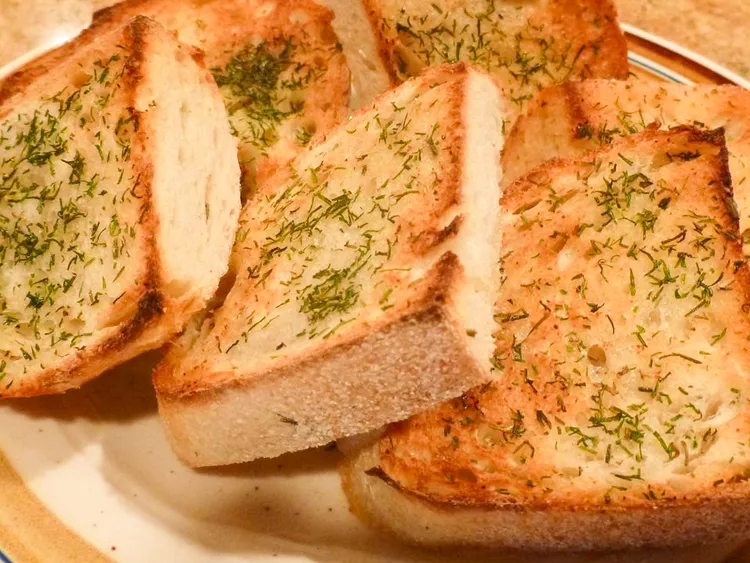

Garlic Bread

Nothing beats garlic bread
On those nights where you can't seem to find hapiness, what better way to find it than inside of some delicious garlic bread?
Ingredients
- ½ cup butter, softened
- ⅓ cup grated Parmesan cheese
- 1 teaspoon dried parsley
- ½ teaspoon garlic powder
- 18 thick slices Italian bread
Steps
- Mix butter, Parmesan, parsley, and garlic powder together in a bowl until well combined.
- Arrange bread slices on a large baking sheet; spread with seasoned butter. Place the baking sheet in the freezer until bread is frozen solid, about 1 hour. Transfer bread to a resealable plastic freezer bag and store in the freezer until needed.
- Preheat the oven to 425 degrees F (220 degrees C). Arrange the desired number of slices on a baking sheet with the butter facing up. Bake in the preheated oven until bread is toasted and butter is melted, 5 to 7 minutes.
Main Page